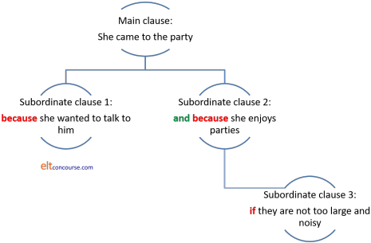

Clausal subordination

Before tackling this guide, you would be wise to consult
the guide to
subordination and coordination (new tab) where the differences and
similarities between the phenomena of coordination and subordination are analysed.
This guide deals with a number of issues covered in more detail
elsewhere such as conditionality and concession. You can track
other guides to the area via
the section
on syntax: clauses and phrases (new tab).
You will know if you have followed
the guide to
subordination and coordination that compound-complex sentences
with mixtures of various types of coordination and subordination are not uncommon in English.
In what follows, for the sake of clarity, we will deal with single
instances of subordination at a time and will not consider
coordination at all.
Here's a list of the contents of this guide.
Clicking on -top- at the end of each section will
bring you back to this menu.
 |
The subordinators |
We can classify subordinators in two ways:
- By their structural characteristics – how they are formed and the nature of the surrounding syntax
- By what they do – their functions in terms of making meaning
We'll do both.
 |
Structural characteristics |
We can divide the structural characteristics into three classes:
- Simple subordinators

- This is by far the largest class and contains the
subordinators that we would consider the essential subordinators
in English. They are all single words and many will be
familiar to most learners above A1 level.
Here's a list:
Whereupon, whereby and whither apart from being slightly archaic, can only come before the second clause for semantic reasons (they introduce chronological or spatial ordering of events).after
although
as
because
before
if
however
lestonce
since
till
unless
until
when(ever)
where(ever)
whencewhereas
whereby
whereupon
while
whilst
whitherSome examples:
After he had driven for 4 hours he stopped for coffee
He couldn't leave until the work was done
Before it rains, we should take the dog out
However you want to do the work is fine with me
I told him it was a stupid idea whereupon he became angry
Whereas I have often worked late, Shirley never does
Once we've finished we can go for a drink
A longer list including all conjunctions is available via the link to a PDF document at the end.
- Compound subordinators

- These are rarer. Many insist on being followed by
that and some can optionally be followed by that.
Others are followed by as and some are simply rather
irregular.
Here's a list:Obligatory that Optional that Obligatory as Others Some examples: except that
in order that
in that
*so that
such thatassuming that
considering that
given that
now that
provided that
providing that
seeing that
supposing thatas far as
as long as
as much as
as soon as
insofar as
so long asas if
as though
in case
rather than
sooner thanHe did all the work except that he forgot the painting
Now that he's at university, we can rent out his room
Considering that he's nearly 80 he's very active
Insofar as she could she answered all the questions
Assuming that it's open I can get it at the corner shop
I'd sooner stay in tonight than go to the party
Seeing that it's under guarantee, I don't worry about it
We can finish today given that we are all working on it
*The phrase so that is listed here as a subordinator which is the role it performs when we are linking action with purpose as in, for example:
I covered it well so that it wouldn't get wet
However, the phrase also functions as a coordinator in, for example:
The fog was very dense so that I couldn't see my way
in which it means so and is only a coordinator expressing consequence.
We can demonstrate this by trying to reverse the clauses so while:
So that it wouldn't get wet, I covered it well
is acceptable as a sentence containing subordination,
*So that I couldn't see my way the fog was very dense
is not because coordinators must retain their position between clauses.
The other sign that the conjunction so that is a coordinator when it signals a result or consequence is that it cannot be paired with other conjunctions so, while we allow:
The fog was very dense and so I couldn't see my way
we do not allow:
*The fog was very dense and so that I couldn't see my way - Correlative subordinators
- These consist of two parts but are separated by the
independent clause. Here's the (short) list of these with
their characteristic function.
Note that although ... yet is archaic and formal. The sense is most often simply expressed with although.Conditional Concessive Proportional Alternative Some examples: if ... then although ... yet as ... so
more/less ... than
the ... thewhether ... or If you cook then I'll wash up
Although his handwriting is poor yet it can be understood
The more people who come the better it will be
The use of then in conditional expressions is not obligatory but it only appears in the second clause. - Marginal subordinators
- Some items are actually prepositional in function (and there
is a view that all subordinators perform preposition-like
functions) but still act to subordinate one clause to another.
Here's a short list:
The prepositional nature of these items is revealed by the fact that they can mostly be followed directly by a noun phrase and serve to link it to the verb. For example:Temporal Causal Contrastive Concessive Some examples: every time (that)
the moment (that)because of
due to
on account of
despite
in spite ofin the light of
regardless ofHe complained the moment / every time the manager was available
Due to / on account of / because of not enjoying concerts, he stayed at home
In spite of / despite being warned she went ahead
Regardless of John avoiding the work, it was finished on time
In the light of Anne doing all the groundwork, we can begin
Because of the rain, I stayed at home
In spite of the snow, I took the dog out
In the light of the new information we need to recalculate the figures
This does not apply to the two temporal subordinators which are not followed directly by noun phrases.
 |
Shared structural characteristics |
All subordinators share certain attributes which distinguish them from coordinators and make them teachable together (but not all of them at once, please).
- Clause mobility
- It is possible to have, for example,
I came because I was interested
and
Because I was interested, I came
and
Unless you work a bit more, you'll fail the examination
and
You'll fail the examination unless you work a bit more
and even
There will, if we work really hard, be time to finish this
Although the emphasis is different, all three orderings are grammatically acceptable.
You cannot do this with coordinating conjunctions, of course, or you get nonsense like:
*But you weren't at home I telephoned
Subordinators travel with their clause; coordinators are independent of either clause and come between them. - Allowing the addition of other conjunctions
- Subordinators can themselves be preceded by coordinators in,
for example:
He didn't come because it was raining and because he was too tired
You can leave early provided that you have finished but only if the boss says it's OK
Again, coordinators do not allow that so we cannot have, for example:
*She called you and but you were in a meeting. - Non-ellipsis of the subject
- Usually, coordinators allow the ellipsis of the subject
providing it is common to both clauses but
subordinators do not so we can have
John came home and cooked
which is a coordinated set of two clauses with ellipsis of the second subject.
Subordination, however, requires the repetition of the subject in both clauses so we allow:
I came in order that I could see you
and
I won't drink if I am driving
but not
*I came in order that could see you
or
*I won't drink if am driving - Assumed reference
-
In a
sentence with two coordinated clauses such as:
He was exhausted but John worked on till six
it is averred by some that he and John must refer to different people. In other words, he cannot be a cataphoric reference to John in a coordinated sentence. This is somewhat questionable but at best the sentence is ambiguous insofar as he and John could refer to the same person or to different people depending on context and co-text.
With subordination, on the other hand, cataphoric reference is always assumed so in
Although he was exhausted, John worked on till six
it is inevitable that he and John will be assumed to be the same person unless intonation, stress and context demand that the sentence be understood differently. - Inability to join two equal subordinate clauses
- In this part, coordinators in green, subordinators in red.
- Coordinators can join two subordinate clauses together as
in, e.g.:
Because I wanted to see you I came to the party and stayed for hours
in which the coordinator and joins two equal-value clauses, but we cannot have:
*She came when you asked in order that you saw her
because only coordinators can link two subordinate clauses together.
Subordinators can, of course, link a further subordinate clause making a complex tree of subordinations so we can have, e.g.:
She came to the party because she wanted to talk to him and because she enjoys parties if they are not too large and noisy
Here, we have a main clause:
She came to the party
a subordinate clause:
because she wanted to talk to him
linked to another equal-value subordinate clause:
and because she enjoys parties
with its own subordinate conditional clause:
if they are not too large and noisy.
If that seems complicated to access, try a diagram:
-

Theoretically, there is no limit to the number of clauses which can be linked in this way. Human cognition, however, limits the number of clauses to a maximum (rarely) of eight.
 |
Function and meaning |
Functionally, there are at least the following classifications.
There are other ways to do this, of course, because people
conceptualise things slightly differently. For teaching
purposes, the following will do. You will notice that some
subordinators can perform more than one function so appear in more
than one category. The examples have been deliberately chosen
to apply to the less-frequently encountered items.
The categories are slightly different from those in
the guide to
conjunctions, by the way.
| Function | Subordinators | Examples and notes |
| conditional | as / so long
as even if if if ... then on condition that provided that providing that supposing (that) unless |
If we
want to get this done then we'll have to start soon. Supposing that John doesn't pay, what will happen then? Unless I am very much mistaken, that's his brother in law. You can do that just as long as nobody gets hurt. See the guide to conditional and concessive subordination, linked below, for more. The unusual nature of unless is covered there, too. |
| concessive | albeit although although ... yet *as as far as assuming (that) considering (that) even though given (that) in that insofar as presuming (that) *that though |
Given that he has no
money, I can see no way he will pay you. Insofar as the work needs doing, I suppose I shall have to pay for it. I will ask him presuming we meet, of course. Although she tried her best, yet she failed to pass. As far as his work is concerned, I have no complaints. See the guide to conditional and concessive subordination, linked below, for more. |
| causal / resultative | as because for fear that in case in order that lest seeing that since so that such that whereby |
I came early so that I
could help out a bit. He wrote his essay such that the links between its parts were clear. Seeing that he is unharmed, there's no reason to panic. In case you need me, I'll be by the phone. He opened the hatch whereby he could get onto the roof. These subordinators have some complex and troubling characteristics so get a section to themselves, below. |
| temporal | after as as soon as before hardly … when immediately no sooner … than now (that) once scarcely … when since till until when whenever whereupon while whilst |
Now that we have finished
the work, we can relax. Once we have finished the work we can relax. I voiced my objection at the meeting whereupon I was fired. Whenever I speak to him, he seems distracted and busy. I cooked whilst my sister did the gardening. Note that since can also act as a preposition as in, e.g., since the war, since 1959 etc. The word whereupon is rare and prohibits the re-ordering of the clauses because it signifies the ordering of events. See the section below for more consideration of these. |
| exclusive | except
(that) lest rather than sooner ... than whether ... or |
I would sooner eat on the
terrace than be in this smoky restaurant. He reinforced the floor lest the snooker table be too heavy. Whether he comes or doesn't come, makes no difference to us. Because of their nature, subordinate clauses in these cases are often ellipted as in, e.g., It makes no difference whether he comes or no(t). The subordinator lest is somewhat old fashioned and is generally followed by a clause in the subjunctive (as in the example). |
| spatial | where wherever whence whither |
Wherever she looked, she
saw enemies. The pub is over the hill, whither we are going today. He knew the city, whence he came, really well. Whence and whither are unusual in modern English and probably not worth troubling any but the most advanced learners with. The adverb where also functions as a relative adverb (see link below). |
| comparative / contrastive | as if as though like whereas while whilst |
He used the stone as
though / if it were a hammer. She prefers to eat out while / whilst I prefer eating at home I had eaten whereas the others had gone hungry Both as if and as though are often followed by a subjunctive form. There is a guide to this and other uses of the subjunctive on the site, linked below. The conjunction like is often considered an informal version of as if and is not followed by the subjunctive. The subordinators while and whilst are also temporal conjunctions. |
| proportional | the ... the more/less ... than as ... so |
The more they shouted the calmer
he became. She was more embarrassed than she ever remembered being. As the evening wore on so they became noisier and more excited. In the first example, the word the looks like the definite article but is, in fact an adverb. In the second example, it is easily argued that the first element of the subordinator is simply a modifier. That is so. |
* The words that and as can act concessively in
very formal and unusual expressions such as:
He did not give things away, rich
that he was
Late as
I was, I didn't miss most of the introduction
which is more often expressed with although as in:
He didn't give things away although he was
rich
I didn't miss most of the introduction although I was late
In this case, the conjunctions are also unusual in not taking
the initial position in the clause.
 |
Causal / Resultative subordination |
There are a number of factors with this type of subordination
which cause some difficulty.
Here are some notes to help:
- in case
operates differently in AmE and BrE:
She will take her laptop in case it's needed
is differently understood.
In British English, this means
She will take her laptop and use it if she needs it
In American English, this might mean:
She will take her laptop only if there's a need for it - whereby
is unusual and almost always formal and often means something like with the aid of as in, e.g.:
She left the door unlocked whereby the bird escaped
it is probably only worth troubling advanced learners with this conjunction. - as, since, seeing that and because
all function as causal subordinators with the same syntax so we find:
We stayed at home as it was raining
We stayed at home because it was raining
We stayed at home since it was raining
We stayed at home seeing that it was raining
are functionally synonymous.
However, the usual ordering of the clauses is slightly different.- as, since, seeing that
all refer to the circumstance which caused the event (or non-event) so a more natural ordering would be:
As it was raining we stayed at home
Since it was raining we stayed at home
Seeing that it was raining we stayed at home - because
on the other hand, emphasises the reason rather than the cause so the ordering naturally remains as:
We stayed at home because it was raining
not as
Because it was raining we stayed at home
which is possible but less natural.
- as, since, seeing that
- for
in this sense, is a coordinator and can only be used between the two clauses. We can allow:
We stayed at home for it was raining
but not
*For it was raining we stayed at home
and the use in coordination is formal and quite unusual. - as and since
can both function as temporal subordinators and since can also be a temporal preposition:
She arrived just as I left
He has lived here since he finished university
He has lived here since his graduation - so that
functions as both a subordinator and a coordinator but with a different meaning:- as a coordinator, not a subordinator, it is akin
to so and refers to a result. For example:
The garden was covered in snow so that he could see the footprints clearly
and In this sentence, so that can be replaced with a true coordinator such as and.
Because it is a coordinator, it cannot shift position so we don't allow:
*So that he could see the footprints clearly the garden was covered in snow - When it is used as a subordinator its function is to
refer to purpose rather than result to mean something like
in order that, and it is subordinating in function
so we can shift the clauses around as
in, e.g.:
He fixed it firmly in place so that it wouldn't move
So that it wouldn't move he fixed it firmly in place
It is possible that some ambiguity may arise. For example, does:
Someone stole my car so that I couldn't get to work
mean that someone stole the car in order to prevent me getting to work or is the result of the theft the fact that I couldn't get to work?
- as a coordinator, not a subordinator, it is akin
to so and refers to a result. For example:
- because
can also be a source of ambiguity when it is used with a negative main clause as in, e.g.:
She didn't come because John would be there
which could mean either:
The reason she didn't come was that John would be there
or
The reason she didn't come was not that John would be there (but arose from some other motivation)
Intonation and sentence stress (on the subordinator) will disambiguate this is speech but only rephrasing can do so in the written form. - lest and for fear
that
are both formal and quite rare:
They covered the work with canvas lest it rain(ed)
She took a sweater for fear that the weather would turn cold
and are often used with a subjunctive form. - Causal / Resultative clauses are normally finite (see below).
 |
Temporal subordination |
| He woke before the alarm went off |
There are rather too many subordinating temporal conjunctions in English and they cause a certain amount of difficulty for learners (and teachers) so they merit consideration here in a separate section.
Above, the following 18 items are listed as temporal
subordinating conjunctions:
after, as, as soon as, before,
hardly … when, immediately, no sooner … than, now (that), once,
scarcely … when, since, till, until, when, whenever, whereupon,
while, whilst
and many of them are synonymous in some respects but not in
others. Few languages have such a rich source of these sorts
of subordinators so choosing the correct one to use and getting the
syntax right is challenging.
Here are some notes to help:
- as, as soon as, when, while and whenever
are not synonyms
The conjunction when is quite versatile but the others are more restricted in their uses.
We can allow, for example:
She left when he arrived
She was working in the garden when he was washing the car
He was living in London when he died
When I want to talk to him he's always too busy
but if we try to replace the conjunction with the other common subordinators, this happens:- as
She left as he arrived
carries a different sense. The use with when implies shortly after he arrived but the use of as implies at exactly the same time. In the sentence with when we might assume that his arrival was a reason for her leaving but we can make no such assumption when the subordination is achieved with as.
She was working in the garden as he was washing the car
is somewhat unusual but possible and carries more or less the same meaning although because the conjunction is also used causally might be interpreted as
Because he was washong the car, mshe was working in the garden.
Additionally,
*He was living in London as he died
is simply not possible because the sense of as is at that precise time and that is not carried by the progressive tense form in the sentence and.
*As I want to talk to him he's always too busy
is also malformed because the sense of as is confined to a single rather then repeated event or state. - as soon as
is an emphatic form of as and carries a little more strength. It cannot, however, be used as a substitute except in the first sense so we allow:
She left as soon as he arrived
to carry the sense of immediacy. However:
*She was working in the garden as soon as he was washing the car
and
*He was living in London as soon as he died
are both disallowed for the same reasons that the single form as is not allowed.
?As soon as I want to talk to him he's always too busy
is only marginally acceptable and implies at the moment when I decide which is unusual. - while
can only be used to link progressive or background (continuous) states so if we produce:
*She left while he arrived
the sentence is malformed.
She was working in the garden while he was washing the car
is perfectly acceptable because both events are progressive and that is the usual use of this conjunction.
*He was living in London while he died
is another malformed sentence because the verb die is punctual in this sense and is not perceived as referring to a long-duration event (although it can).
*While I want to talk to him he's always too busy
is also malformed because although while can be used to refer to a background continual state, it cannot refer to the iterative (repeated) sense of whenever which is carried by when in this example. - whenever
refers to iterative events and cannot be used to refer to one-off or progressive events so:
She left whenever he arrived
can only refer to a habitual response to a repeated event.
She was working in the garden whenever he was washing the car
results in a similar and quite unusual sense of a repeated, long-duration event rather than a singled pair of progressive actions.
*He was living in London whenever he died
is clearly nonsensical because dying cannot be repeated
Whenever I want to talk to him he's always too busy
is the usual sense of the subordinator and refers to a repeated pair of events.
Finally, whilst is a synonym of while and commonly misused when the simpler form while is stylistically preferable. (The word is, in fact, an old genitive form of while and functionally redundant in English.)
- as
- while and whilst
also function as contrastive conjunctions and can imply concession as in, e.g.:
While / Whilst he isn't rich, he has enough to live comfortably - hardly .... when, no sooner ... than, scarcely ... when
are synonymous in most cases but they share a characteristic of other negative adverbials in insisting on an alteration to word ordering making a question form with do, did, does or by inversion of auxiliary verb and main verb as in, e.g.:
No sooner had he arrived than she left
Hardly had he arrived when she left
Scarcely did he arrive when she left
and all suggest an almost simultaneous pair of events.
The last example here is slightly unusual because these subordinators usually occur with past perfect tense forms. The structure is:
No sooner / Hardly / Scarcely + past perfect + past simple
None of these can be used with long-duration or progressive events because by their nature they refer to two virtually simultaneous events. So:
*No sooner was she working in the garden when he was washing the car
etc. are not allowed and we cannot allow:
*Hardly was he living in London when he died
*Scarcely do I want to talk to him than he's always busy - before, after
are straightforward and translate precisely into many languages, causing few conceptual and no structural issues. - immediately, now that and once are not
exactly synonymous
The first implies at almost the same exact time (rather like as) but once implies shortly afterwards and because so, for example:
She left immediately he arrived
implies a very short time thereafter but
She left once he arrived
implies a longer time gap and possibly a causal connection. For that reason, the past perfect form is often preferred, as in:
She left once he had arrived
The conjunction now (that) is frequently used to in present perfect constructions to embed the past event in the present and signal the causal nature of the two states as in, e.g.:
Now (that) Mary has arrived, we can start. - since
occurs both as a preposition as in:
He has lived here since the war
and as a subordinating conjunction as in:
He has lived here since the war finished
The conjunction may also occur in a non-finite clause structure as in, e.g.:
Since finishing university he has been unemployed
and that is an unusual role for a subordinating conjunction.
Few languages have a parallel structure like this. - till and until
are synonymous although the first is far less formal (and sometimes further reduced to til). Both mean up to the time when. - whereupon
is quite an unusual conjunction which always occurs linked to the second, subordinated clause because, semantically, it strongly implies a causal connection as in:
He arrived, whereupon she left
Not listed above are some common noun phrases which perform a
subordinating grammatical function including, for example:
(At) The moment he arrived she left
(compare as, as soon as)
Every time I want to talk to him he's always
busy
(compare whenever)
Temporal subordinators vary in whether they allow non-finite or reduced clause constructions and that is set out below in the restrictions section.
 |
Clause ordering: theme and rheme |
Because subordinators are linked to the clause (unlike
coordinators which usually come between the clauses), the ordering
of the clauses can be reversed and still produce a sensible
sentence. We can have therefore:
Whereas most of the children arrived late,
Mary was on time
or
Mary was on time whereas most of the
children arrived late
and
Wherever I went, I encountered nothing but
friendliness
or
I
encountered nothing but friendliness
wherever I went
and so on.
However, in English, word ordering determines what the reader / hearer will understand as the theme of the sentence. Above, the themes are highlighted in black. What follows the theme is called the rheme and that, incidentally, frequently forms the theme of the next sentence, maintaining coherence and cohesion in a text.
When subordinate and main clauses are reversed, so are the
associated themes and rhemes. So, for example:
Because she
wanted to meet his mother, she travelled up to
London
and
She
travelled up to London because she wanted to meet
his mother
are not simply alternative ways of saying the same thing as the
themes (in black)
show.
Theme and rheme are identified by word order and word order is not
selected at random.
Speakers and writers will select the word order to match what they
perceive as the theme of the sentence.
Naturally, the first sentence would be followed by something about
London such as:
While she was there, she took the opportunity
to visit the British Museum
and the second sentence would be more naturally followed by
something about the mother such as:
She was delighted to see her
If we follow the first sentence with something more appropriate
to the second we get:
Because she wanted to meet his mother she
travelled up to London. She was delighted to see her
in which we are left in a state of ambiguity regarding who was
delighted to see whom.
If we follow the second sentence with the theme appropriate to the
first, we get:
She travelled up to London because she wanted to meet his
mother. While she was there, she took the opportunity to visit
the British Museum
which is only marginally coherent.
The other indicator of what is perceived as the most important information is to note that pitch will rise and fall most obviously on London and mother respectively, signalling that this is the new information.
Reversing the clauses has a real and important communicative effect.
For more on theme-rheme structures, see the guide, linked below.
Alternative ways to subordinate |
There are four major ways in which English can signal a subordination of one clause to another without using a conjunction (although conjunctions are by far the most frequent).
- wh-words
- Frequently, wh-words occur in pronoun and adverb relative clauses. They function to split the main clause,
inserting the relative clause into the sentence like this:
The shop, where you bought the coat, has closed.
There is, however, a crucial difference because adverb relative clauses perform a coordinating, not subordinating function and can be removed to leave two well-formed independent clauses so we can rephrase:
That was the moment when he realised the truth
as
That was the moment. He realised the truth.
which, although the sense is lost to some degree, results in two potentially independent clauses.
When, on the other hand, the relative pronoun is removed from a sentence the structure's subordinating function becomes apparent because removing it from, for example:
He was the man who lent us the money
leaves nonsense.
The subordination occurs with both defining and non-defining relative pronoun clauses:
The people who came to the party were genuinely friendly.
The relative pronoun that is used in a similar way:
The dog that bit him belongs to the neighbours.
When omitting the relative pronoun is allowed (i.e., when it stands as the object in a defining clause, subordination still occurs
The man we asked was very helpful.
There is a guide to relative pronoun clauses on this site linked in the list of related guides at the end.
- that clauses
- The word that is not in itself in any lists of
subordinating conjunctions. It is, however, an
indicator of subordination and occurs, for example, in
sentences such as:
That he was drunk was obvious to everyone
where it functions as the subject of a copular verb
I expect that she will be late
where it functions as the object of the verb
The result is that we can't afford it
where it functions as the complement of a copular verb.
That clauses do a lot of other things in the language, too. - what clauses
- The word what can also act as an indicator
of subordination. For
example:
She told me what she wanted
where it is the object of the verb
What he did made the situation more difficult
where it is the subject of the verb
The outcome is what we expected all along
where it functions as the complement of the copular verb. - Inversions
- This is a fairly rare occurrence in English in conditional
sentences but in formal writing may be encountered. The
usual items are had, were and the putative should:
Had I known you were coming, I would have got in some beer.
Were you to try a bit harder, I feel sure you'd understand.
Should you find yourself in any trouble, call me at once.
 |
Non-finite adverbial-clause subordination |
Non-finite forms are those in which the verb is
not conjugated to show person, tense or number. For example:
He came because I asked
contains two finite clauses, the second subordinated and both of
which contain a conjugated verb showing tense (in English; in other
languages the verb form might also show person and number).
However, in:
Having been asked, he came
contains two clauses, again, but the first is non-finite because it
does not show tense in the verb form in the conventional way.
This is a large category. If you have followed the
guide to clause structure, you'll know that independent clauses
cannot be non-finite but that a non-finite clause is almost
always a marker of subordination. If the terms confuse
you, there is a guide to finite and non-finite clauses on this
site linked in the list of related guides at the end. Here are two examples:
I came (in
order) to help
(non-finite to-infinitive clause)
Opening the door, he saw the fire
had burnt out (non-finite -ing clause)
These sorts of subordination may be replaced by the use of a
subordinator.
I came so that I can help
When he opened the door, he saw the fire had burnt out
Non-finite adverbial clauses generally function as
- adjuncts
(being integral to the sentence), for example:
John, having no work on, was happy to come and help - disjuncts (showing the speaker / writer's attitude to what
is being said), for example:
Personally speaking, I have no objections - conjuncts (linking two clauses or sentences), for example:
It's going to be difficult to do within the budget. That having been said, we may be able to manage
There are five ways in which non-finite adverbial clauses can be used to subordinate. As is the case for subordinating conjunctions, they answer questions such as when?, where?, with what?, how?, what if? and so on. When these clauses are used without a conjunction, they may be referred to as absolute clauses.
- The bare infinitive
For example:
Rather than do it himself, he called in a builder
Sooner than have a problem later, she made sure it was well done
These clause types are actually quite rare and usually signal exclusiveness.
All such non-finite constructions can be rephrased using finite forms with subordinators:
Because he didn't want to do it himself, he called in a builder
She made sure it was well done so that she didn't have a problem later - The to-infinitive
For example:
To see better, he stood on tiptoe
Soon to be given a pay rise, she splashed out on a new car
In some cases, the infinitive form is actually an abbreviated form of in order to and answers the question why?
The connection is usually causal.
All such non-finite constructions can be rephrased using finite forms with subordinators:
So that he could see better, he stood on tiptoe
Because she was soon to be given a pay rise, she splashed out on a new car. - The -ing
participle
For example:
Having no work, he slowly spent his savings
Watching TV, being bored and not having anything better to do, I saw something about it on the news
In almost all cases, the form implies a causal or temporal connection.
All such non-finite constructions can be rephrased using finite forms with subordinators:
He spent his savings because he had no work
When I was watching TV because I was bored and didn't have anything better to do, I saw something interesting about it on the news
Misuse of the -ing participle in non-finite clauses often results in what is called a dangling or unattached participle. For example:
Getting on the bus, John's wallet fell from his pocket
Asking my students, they tell me they find non-finite clauses difficult to use
are semantically and grammatically flawed because it was not the wallet that got on the bus or the students who did the asking. To avoid this kind of error, the participle and the main clause verb need to have the same subject. The use of a finite clause solves the issue:
While he was getting on the bus ...
When I have asked my students ...
The rule of attachment to the same subject is often relaxed so we allow:
Being Friday, the staff left early
Being optimistic, Mary will be able to do the job
(which could be ambiguous depending on whether the speaker or Mary is the optimist). - The -ed
participle
(This is a slight misnomer in that irregular verb forms do not take -ed endings so the form is often called the -en participle.)
For example:
Tired and worn out, he went to bed
Opened, the box revealed its secrets
Again, in almost all cases, the form implies a causal or temporal connection.
All such non-finite constructions can be rephrased using finite forms with subordinators:
As he felt tired and was worn out, he went to bed
As soon as it was opened, the box revealed its secrets - Verbless clauses
(This appears to be a contradiction if one assumes that all clauses contain verbs but can be analysed as ones in which the verb is omitted and understood.)
For example:
In sunshine or in rain, the garden was tended beautifully
(= Whether there was sunshine or rain ...)
Acceptable or not, the work must be paid for
(= If it is acceptable or not ...)
Some verbless clauses, known as supplementing clauses, refer to the whole of the preceding clause and omit all of it, including the verb. They are usually afterthoughts or additions to a statement and are avoided in formal writing. For example:
I had finished the report – scarcely
(= I finished the report but only scarcely finished it)
Some verbless clauses, known as appended clauses, apply to part of the preceding clause only and are slightly more formal, being used in written and spoken forms. For example:
The child was tired, perhaps overtired
(= The child was tired. The child was perhaps overtired)
Non-finite clauses can also be used in the conventional way with subordinating conjunctions. Here are some examples of all eight types of subordination in the table above:
- Conditional
-
When known, the cost should be published
(= If it is known, the cost should be published)
There is some ambiguity with a temporal connection here because it could mean
As soon as the cost is known it should be published. - Concessive
-
Although proven, the accusation was ignored
by the court
(= Although it was proven, the accusation was ignored by the court) - Causal / Resultative
- Because of being tired, he left early
(= Because he was tired, he left early) - Temporal
-
When digging in the garden, he found the coin
(= When he was digging in the garden he found the coin) - Exclusive
- When not including John, we'll be eight for dinner
(= If we don't include John, we'll be eight for dinner) - Spatial
- Wherever placed, it's going to be unsuitable
(= Wherever it is placed, it's going to be unsuitable) - Comparative / Contrastive
- As if stung, he jumped suddenly
(=As if he had been stung, he jumped suddenly) - Proportional
- The more extreme, the more likely he was to hold the view
(= The more extreme a view was, the more likely he was to hold it)
The sorts of non-finite clauses used to express temporal or
causal relationships can give rise to some ambiguity of meaning.
For example:
Being in New York, she went to see him
could mean:
While she was in New York, she went to see him
or
Because she was in New York, she went to see
him.
 |
Exclusions |
It is not possible to use non-finite clauses with a range of
conjunctions.
If these conjunctions are used with non-finite clauses, the
result is unacceptable so we cannot allow those in the left-hand
column. We must rephrase the sentences to use finite clauses
as in the right-hand column:
| Faulty use with non-finite clauses | Correct use with finite clauses |
| *As being ready I left the house | As I was ready, I left the house |
| *Wherever putting it, it looked wrong | Wherever I put it, it looked wrong |
| *Because arriving too early, I had to wait a long time | Because I arrived too early, I had to wait a long time |
| *In order that fixing it firmly, I used long screws | † In order that it was firmly fixed, I used long screws |
| *So that seeing his daughter he travelled to London | So that he could see his daughter, he travelled to London |
| *As long as not breaking it, you can borrow the drill | As long as you don't break it, you can borrow the drill |
| *The more shouting the less she will listen | The more you shout, the less she will listen |
| *Seeing that broken, I'll buy a new one | Seeing that it is broken, I'll buy a new one |
| *Now that finished, we can go home | Now that we have finished, we can go home |
| *On condition that paid, you can leave at any time | On condition that you have paid, you can leave at any time |
| *Supposing raining, what will you do? | Supposing it rains, what will you do? |
| *As long as being here, you can come with us | As long as you are here, you can come with us |
Other subordinating conjunctions are more forgiving and allow both finite and non-finite clauses:
| Use with non-finite clauses | Use with finite clauses |
| While reading the newspaper, I noticed the mistake | While I was reading the newspaper, I noticed the mistake |
| Since finishing college, he has worked from home | Since he finished college, he has worked from home |
| † He had few friends until joining our club | He had few friends until he joined our club. |
| Although feeling very tired, she decided to go to the party | Although she felt very tired, she decided to go to the party |
| ‡ If passed the law will make it illegal to buy those | If it is passed the law will make it illegal to buy those |
| ‡ If visiting London, be sure to see The British Museum | If you are visiting London be sure to see The British Museum |
| ‡ Unless performed, the play will be forgotten | Unless it is performed, the play will be forgotten |
| Before re-opening, the pub was very scruffy | Before it re-opened, the pub was very scruffy |
| Whether raining or not, I'm taking the dog out | Whether it is raining or not, I'm taking the dog out |
| He kept his words simple as if speaking to a child | He kept his words simple as if he was speaking to a child |
| Once finished, they could relax | Once they had finished, they could relax |
| When speaking to her, he is always polite | When he speaks to her, he is always polite |
| Till told, I had no idea | Till I was told, I had no idea |
‡ Other conditional subordinators cannot be used with non-finite clauses (see above).
The restrictions on the use of non-finite clauses with some subordinators is not parallelled in many languages and a source of a good deal of error (see the first table for some examples).
Subordinate clause position |
Whether finite or non-finite, with true subordinating conjunctions or marginal ones, subordinate clause position is flexible. The clause can be:
- Initial
- Because she wanted the job, she accepted less money
If you want to catch the train, go now
Watching the game, I noticed the referee's bias - Final or Terminal
- She left because she was tired
You have to come now, whether ready or not
I'll come to see you when I get time - Mid or Medial
- John, feeling miserable, decided to stay at home
The work, despite costing so much, was well done
You can, if you like, leave now
The medial position is both more formal and less common (and harder to understand, not only for learners).
 |
Weighting |
If there are two subordinated clauses, the final one carries the
most weight so, for example:
She went home to bed when the film finished
because she was tired
emphasises her tiredness, but:
She went home to be because she was tired
when the film finished
may imply that it was the film that made her tired or that she was
tired in any case but either interpretation emphasises the end of
the film.
 |
Ambiguity |
Ambiguity can, as we have just seen, be caused when there are two
subordinate clauses because it is not always clear whether the
subordination belongs to the main clause or to another subordinated
clause. For example:
I expected he would be happy with the figures
before the meeting started
can be interpreted either as:
Before the meeting started, I expected he
would be happy with the figures
or
That he would be happy with the figures before the
meeting started was what I expected
moving clauses around or rephrasing is usually the only way to
avoid the ambiguity in written language but intonation and pausing
play a significant role in speech.
 |
Right ordering |
There is a tendency in English to order subordinate clauses to
the right of the main clause in the terminal position. There
is more on this is the general overview of subordination and
coordination (first link below) but one important restriction should
be noted here:
It is not possible to embed one subordinate clause inside another in
the initial position without a conjunction so we allow, e.g.:
She accepted less money because, having
ambitions in the area, she wanted the job
and
Because she wanted the job and had ambitions in the area
she accepted less money
but not
*Because, having ambitions in the area, she wanted the
job she accepted less money
The usual ordering is either:
| Subordinate clause 1 | Main clause | Subordinate clauses 2, 3, 4 etc. |
| As he felt ill | John stayed at home | where he did what work he could because it was urgent |
or
| Main clause | Subordinate clause 1 | Subordinate clauses 2, 3, 4 etc. |
| You should leave soon | if you want to catch the train | because the traffic is heavy in the evenings and you may be delayed |
 |
Pronoun reference |
Subordination allows for pronoun referencing to be either
cataphoric (referring forward) or anaphoric (referring back) and
that distinguishes it from coordination which only allows anaphoric
referencing. We can allow, for example:
Mary was tired and she stopped arguing
because the reference for the pronoun she has been stated,
but we cannot allow:
She was tired and Mary stopped arguing
unless she and Mary refer to different people.
However, with subordination we can allow both sorts of referencing
so:
Because she was tired, Mary stopped arguing
Because Mary was tired, she stopped arguing
are both acceptable.
Equally, we can allow:
John argued although he was tired
and
Although he was tired, John argued.
In other words, in sentences with subordinated clauses, the
assumption will always be that the pronoun reference and the noun
refer to the same entity whichever way the referencing goes.
Pronunciation issues |
Features of connected speech affect how subordinated clauses
are pronounced in the normal way of things so rhythm and
stressing are features which need to be taught (not just practised
in a parroting way).
However, additionally, all conjunctions are function rather than
content lexemes and subject to a good deal of weakening and
reduction in rapid connected speech, in particular.
- if
is often almost inaudible and pronounced as /f/ rather than /ɪf/ so, for example:
If he's not here soon, we'll start without him
will not usually be pronounced carefully as:
/ɪf.hiz.nɒt.hɪə.suːn/ /wil.stɑːt.wɪð.ˈaʊt.ɪm/
but as:
/fiːz.nɒt.hɪə.suːn/ /wil.stɑːt.wɪð.ˈaʊt.ɪm/
and learners, unless they have been alerted to the fact and given some practice at identifying the conjunction in connected speech may miss the conditional nature of the sentence altogether. - because
is often reduced and made monosyllabic as /kɒz/ rather than /bɪˈkɒz/ so, for example:
She came because I asked
may be pronounced as:
/ʃi.keɪm.ˈkɒz.ˈaɪ.ˈɑːskt/ -
unless
may be reduced to /les/ so:
We'll wait for him unless you need to go
may appear in rapid speech as:
/wil.weɪt.fər.ɪm.ˈles.ju.niːd.tə.ɡəʊ/
| Related guides | |
| the word-class map | for links to guides to the other major word classes |
| list of conjunctions | this link (new tab) will provide you with a classified list of English conjunctions |
| subordination and coordination | for an overview of the area |
| coordination | for the guide dedicated to this area but beware of the overlap |
| theme-rheme structures | for more on how this works and some discussion of subordination |
| syntax: clauses and phrases | for the index to allied areas |
| adverbials | for more on the distinction between adjunct, disjunct and conjunct |
| conjunctions | for more on the word class in general |
| so and such | for a short guide to these two troublesome words |
| conditional and concessive clauses | for more on two specific types of subordination |
| subjunctive | for more on the other uses of the subjunctive in English |
| relative pronoun clauses | for more on a particular type of subordination using pronoun forms rather than conjunction |
| relative adverb clauses | for more on subordination using adverbs |
| finite and non-finite clauses | for a guide to these two basic clause and verb types |
| ambiguity | for a guide which considers how subordination and coordination can lead to ambiguity but sets it in a broader picture |
| lesson on subordination | a lesson on subordination for higher-level learners |
| exercise on subordination | a short exercise on subordination to test learners (and you) |
References:
Carter, R & McCarthy, M, 2006, Cambridge Grammar of English,
Cambridge: Cambridge University Press
Quirk, R & Greenbaum, S, 1973, A University Grammar of English,
5th edition. London: Longman
Quirk, R, Greenbaum, S, Leech, G & Svartvik, J, 1985, A
Comprehensive Grammar of the English Language, New York:
Longman